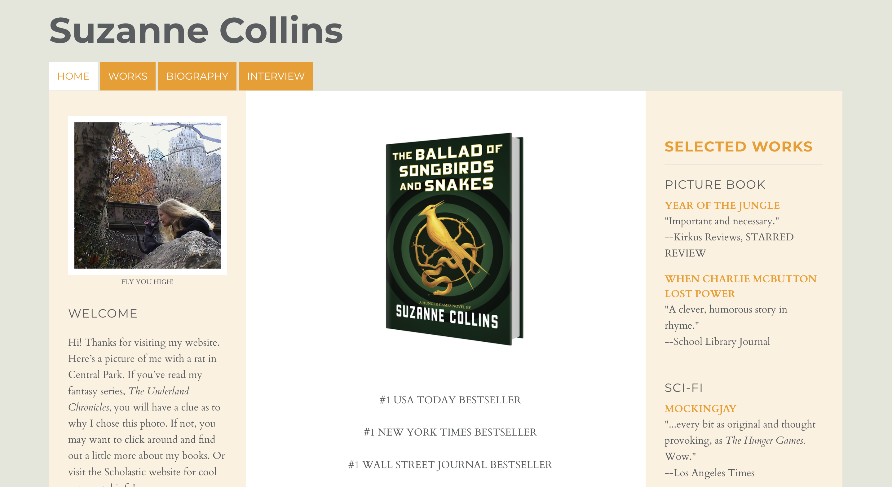
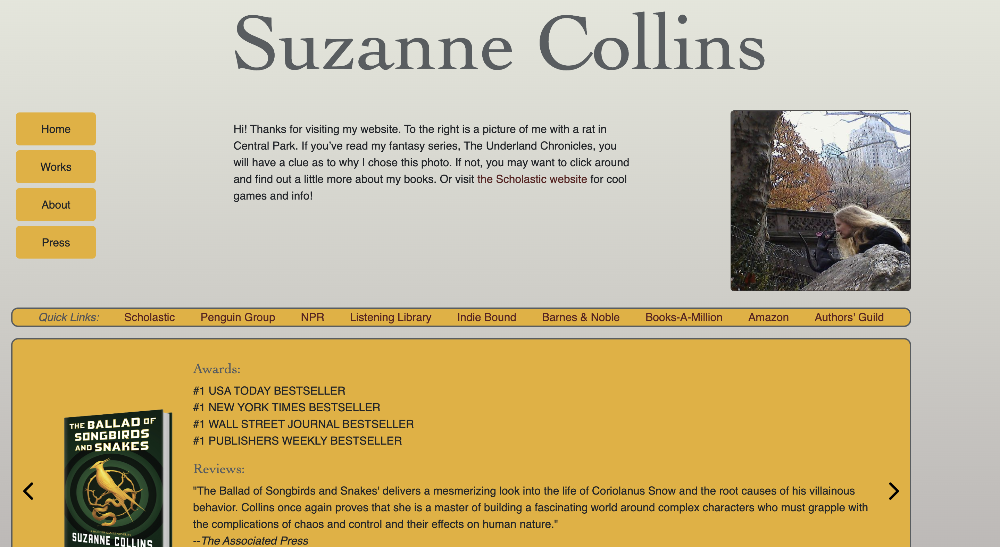

For this assignment I selected Suzanne Collins' website.
I selected this website because it's a simplistic website but I believe it almost plays into that element a bit too much. I think there's a lot of content that's simply just dumped on the pages without much thought given to best ensure users see that information in a manner that works best for them. Important information is essentially not positioned in a manner that's best suited to ensuring a user sees it.
I definitely agree with the accessibility findings. There seems to be a lot of empty space which is due to the empty headings. The font selected for the menu items doesn't stand out and could be difficult for someone with poor eyesight to see clearly. The images also don't have alternative text attached to them. I think overall the website wasn’t cleaned up before launch. The tool spotted some links that are missing text which can be pretty confusing to a user.
For this assignment, I made certain key changes:
These changes were necessary because they cleaned up the look of the page by eliminating the need for extensive bodies of text. I feel the repositing of certain elements such as the main header and quick links draw a user's attention thereby increasing the usability and memorability of the website's features. The changes in the font and font color were also necessary to increase the memorability. Overall, the scrolling slideshow would be the cherry on top because this increases usability while also serving as a perfect way to decrease the amount of raw text on the homepage.
